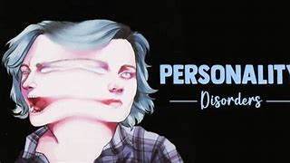

Personality disorders are characterized by enduring maladaptive patterns of thought and behavior that can hinder the establishment and maintenance of relationships, as well as the ability to cope with daily stress in personal and work life. Individuals with personality disorders may not always recognize that they have a mental illness.

Three Major Categories of Personality Disorders:
Cluster A: Odd or Eccentric Behavior:
Schizoid Personality Disorder: Lifelong indifference toward others and social isolation.
Paranoid Personality Disorder: High suspicion and mistrust of others without adequate cause.
Schizotypal Personality Disorder: Odd or eccentric behaviors and difficulty connecting in relationships.
Cluster B: Dramatic, Emotional, or Erratic Behavior:
Antisocial Personality Disorder: Long-term manipulation or exploitation of others without remorse.
Narcissistic Personality Disorder: Extreme self-importance and lack of empathy for others.
Cluster C: Anxious or Fearful Behavior:
Avoidant Personality Disorder: Extreme social inhibitions marked by fear of rejection and feelings of inadequacy.
Dependent Personality Disorder: Symptoms include feelings of helplessness, submissiveness, or an inability to make simple decisions or care for oneself.
Obsessive-Compulsive Personality Disorder: Preoccupation with orderliness, rule-following, control, and perfection.
Understanding these categories helps identify and classify specific personality disorders, but it is crucial to seek professional help for accurate diagnosis and appropriate treatment. Personality disorders often require long-term therapeutic interventions to address the underlying patterns of behavior and improve overall functioning.
Common symptoms of Personality Disorders include:
Strange or unpredictable behavior.
Suspicion and distrust (not trusting others).
Taking risks.
Extreme mood swings or emotional outbursts.
Difficulty with relationships.
Problems at school or work.
Need for instant gratification (immediate pleasure or reward).
Many people have some of these traits, but they do not fit a diagnosis of personality disorder. Personality disorders tend to start in adolescence (teenage years). The thoughts and behaviors become more firmly fixed in adulthood. People with personality disorders might not be aware that they have a problem. They may find it hard to seek help. Family or friends may be severely affected by caring for someone with a personality disorder and they may be the ones to seek help.